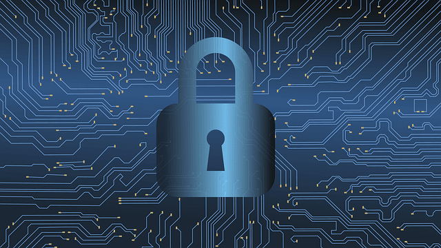

23/07/2020 à 17h30
La cybersécurité englobe tous les moyens qui permettent d’assurer la protection et l’intégrité des données, sensibles ou non, au sein d’une infrastructure numérique. C’est une spécialité au sein des métiers des systèmes d’information. La notion de cybersécurité intervient de façon récurrente grâce à la transformation numérique des entreprises, qui généralisent l’utilisation d’outils informatiques et la communication via Internet.
Qu’est-ce que la cybersécurité ?
La cybersécurité assure une gestion de la data dans des conditions optimales et sécurisées. Elle permet la protection des systèmes d’informations et des données qui circulent contre ceux que l’on appelle les cybercriminels. Les compétences en informatiques acquises par les personnes malveillantes sont des risques à ne pas prendre à la légère. De l’installation d’un antivirus jusqu’à la configuration de serveurs, ou encore le gardiennage des datas centers et des bureaux, la sécurité informatique impacte tous les métiers.
Outre les cyberattaques, la cybersécurité permet la mise en place de processus auprès des collaborateurs pour l’instauration de bonnes pratiques. En effet, les erreurs humaines sont des sources réelles de fuites de données. La sensibilisation des équipes aux problématiques de phishing ou d’usurpation d’identité est une composante importante d’une politique de sécurité informatique.
Parmi les mécanismes de cybersécurité, nous pouvons citer :
les processus d’identification,
le chiffrement des données et des connexions,
les processus pour le contrôle et la mesure des mécanismes mis en place,
la mise à jour constante des logiciels,
la mise en place de dispositifs permettant la récupération rapide des données sensibles en cas de problèmes techniques,
etc.
La cybersécurité pour les entreprises
Les entreprises ont besoin de processus de cybersécurité fiable et performant afin de travailler dans de bonnes conditions. La protection des données sensibles est essentielle pour garantir l’intégrité de chaque collaborateur, mais aussi des clients et des partenaires.
De plus, en tant qu’entrepreneur, la loi exige la mise en place de tous les moyens techniques et organisationnels pour garantir la cybersécurité relative aux données personnelles. La consultation par des tiers non autorisés est inconcevable.
Cybersécurité et enjeux pour le traitement des données personnelles
La collecte et la gestion des données personnelles auprès des utilisateurs d’un service en ligne (application, site Internet, etc.) sont une ressource précieuse pour le pilotage des actions d’une entreprise. L’analyse marketing et le déploiement d’actions pour une meilleure expérience client se basent sur les données personnelles, que cela soit de façon empirique ou plus précise.
Pour garantir la confidentialité et l’intégrité des données des utilisateurs, leurs exploitations par les entreprises sont extrêmement contrôlées. Chaque processus de collecte, d’archive, et d’utilisation doit être justifié et délibérément accepté par l’utilisateur. Le RGPD (Règlement Général sur la Protection des Données) demande aux entreprises la mise en place de process de gestion des données précises et exigeantes. Assurer la cybersécurité est essentiel pour protéger les informations collectées.
Qui est responsable de la cybersécurité ?
Dans une entreprise, les dirigeants sont responsables de l’intégrité et de la confidentialité des données qui circulent pour son activité. En tant qu’employeur, il s’agit également de protéger les salariés en ce qui concerne leurs informations personnelles.
Les entreprises peuvent internaliser les compétences dans le domaine de la cybersécurité grâce à une DSI (Direction des Systèmes d’Information). L’intervention d’un expert extérieur est également une bonne pratique. En effet, les audits IT permettent le contrôle et l’analyse des process mis en place pour assurer une cybersécurité optimale.
Joy Clotaire
DAMY Joyot Mamet Clotaire